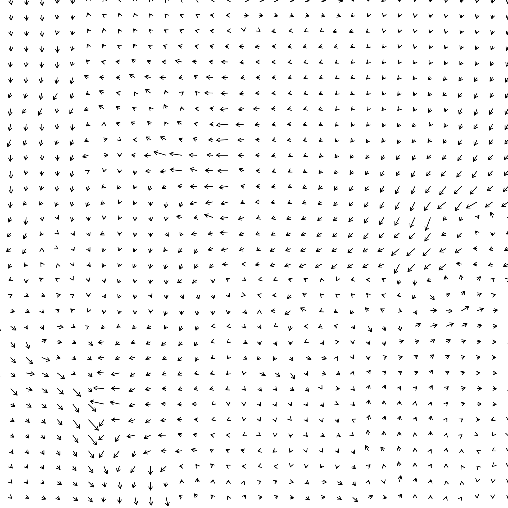
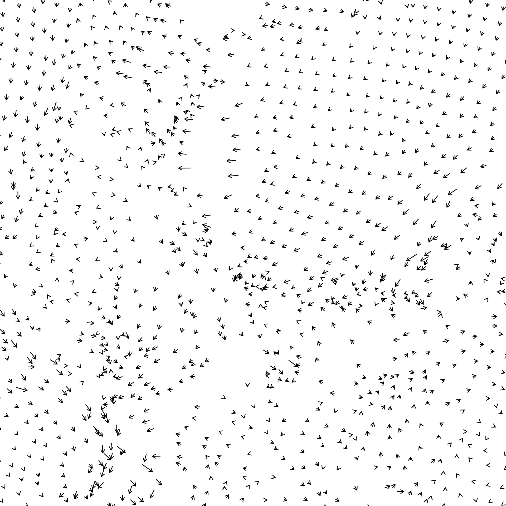
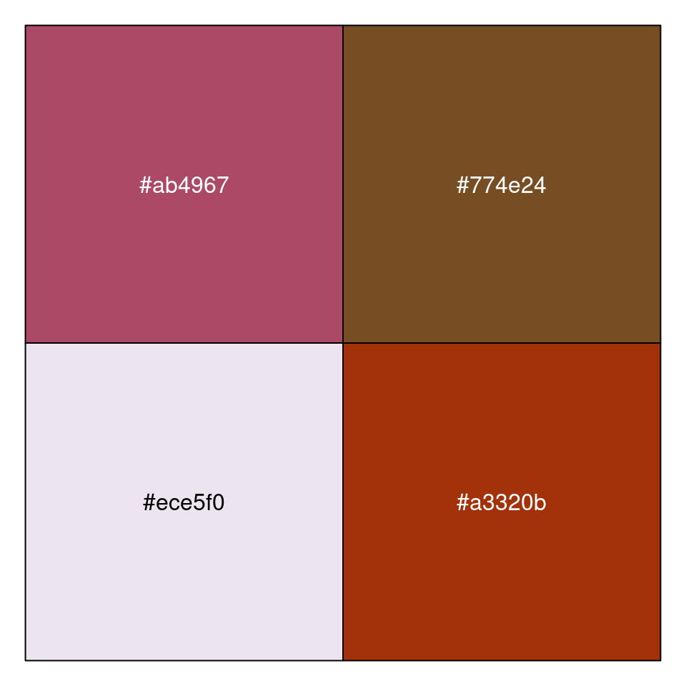
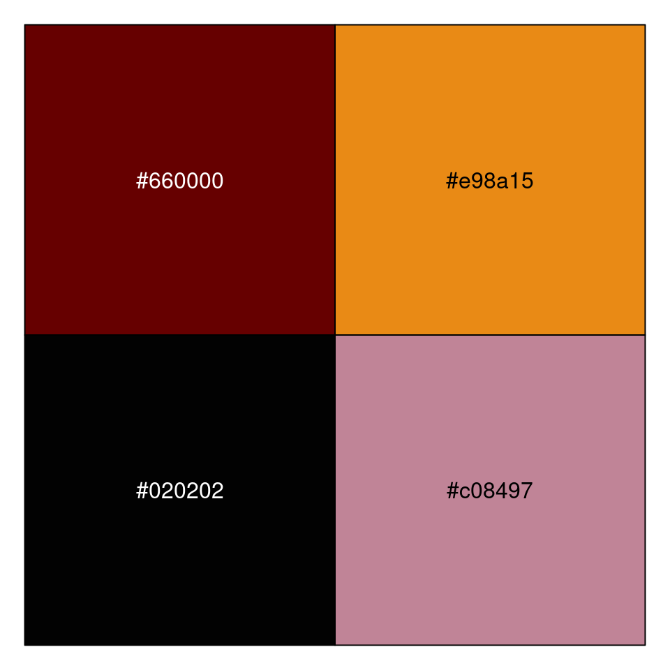
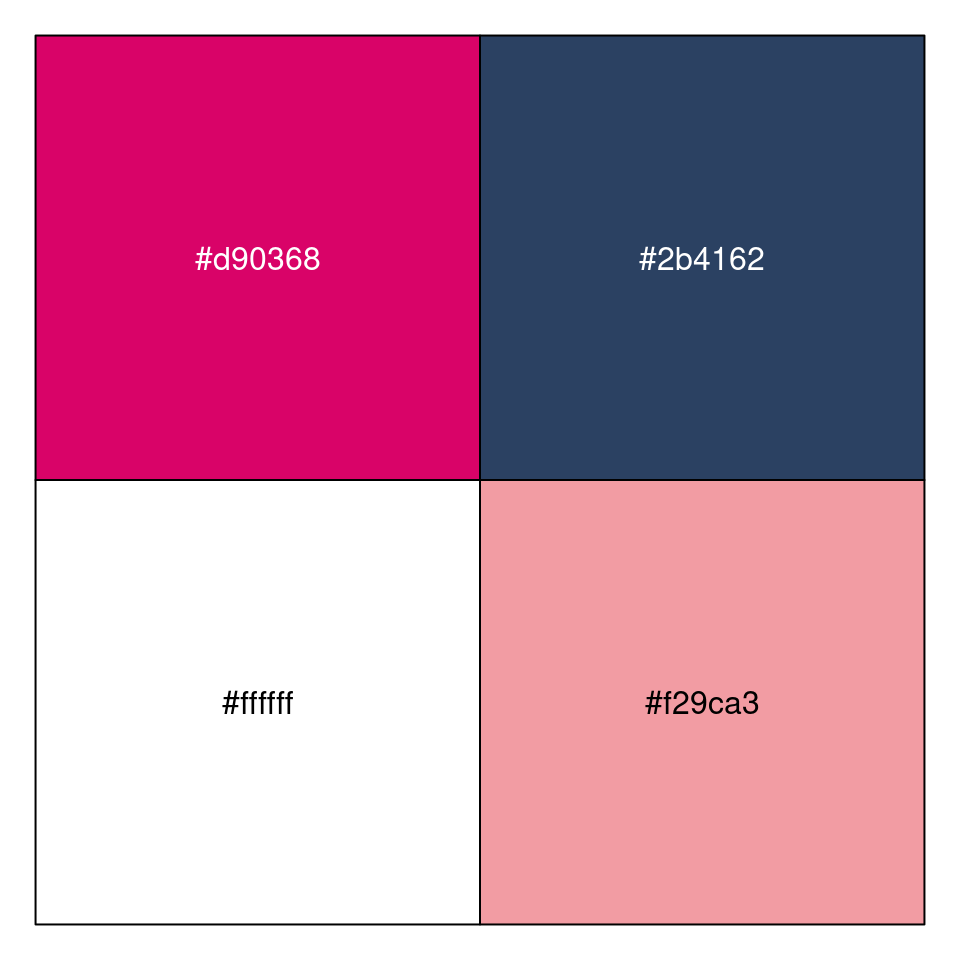
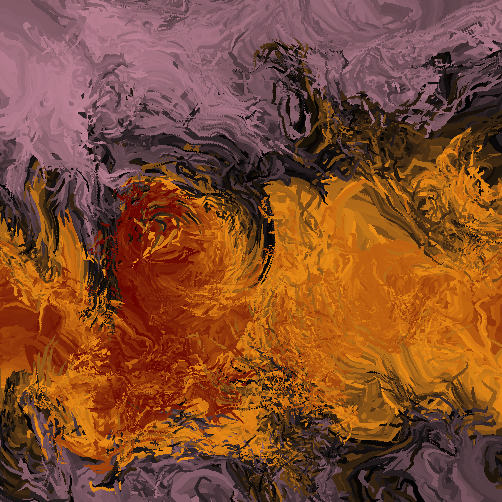
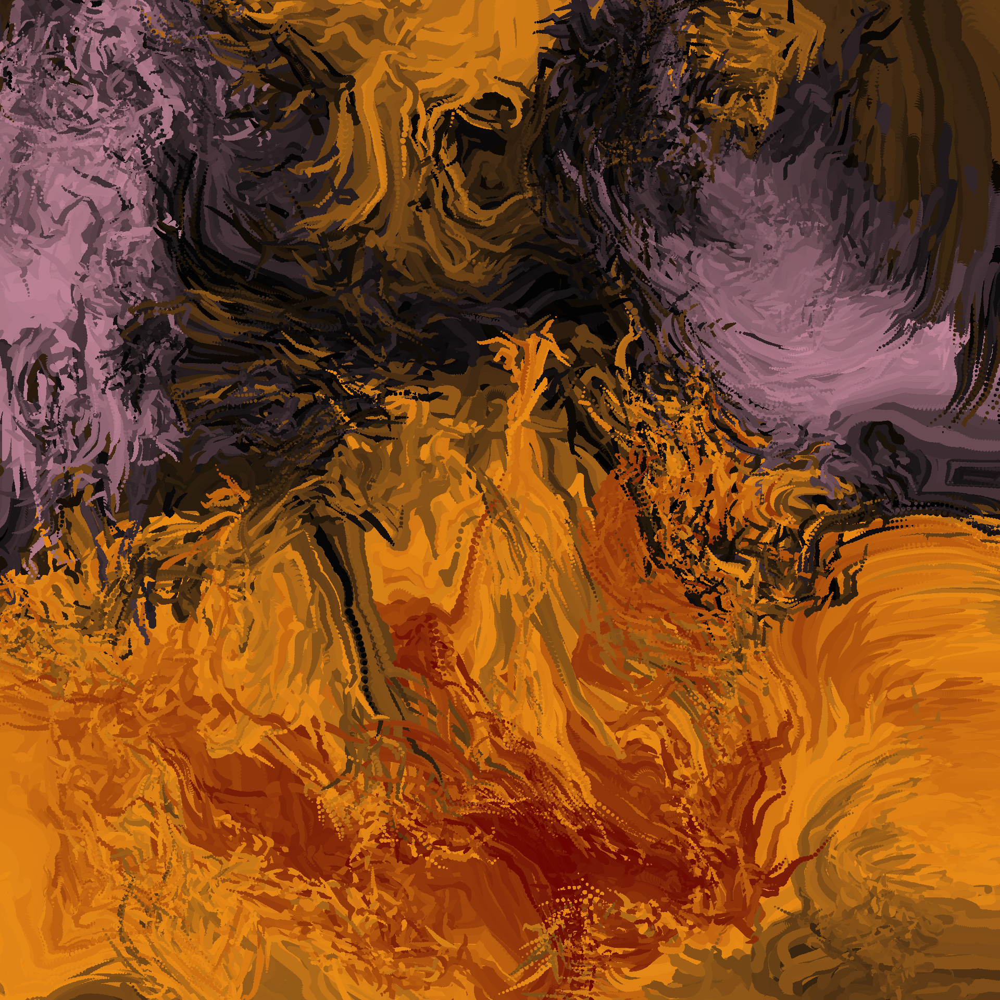
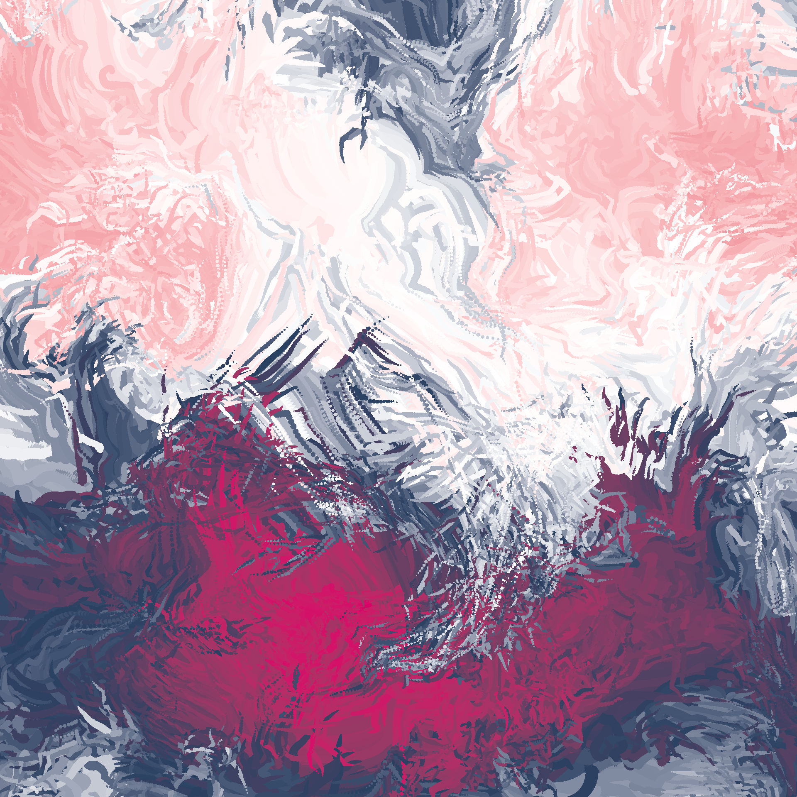

![]()
#include <Rcpp.h>
using namespace Rcpp;
// wrap position to grid
int wrap(int pos, int size) {
if(pos < 0) pos = pos + size;
if(pos >= size) pos = pos - size;
return pos;
}
// automaton run function
// [[Rcpp::export]]
NumericMatrix automaton(int n_rows, int n_cols, int iterations, int max_span) {
int source_row = 0;
int source_col = 0;
int span_row = 0;
int span_col = 0;
int row = 0;
int col = 0;
int r = 0;
int c = 0;
double source_val = 0;
NumericMatrix grid(n_rows, n_cols);
for (int row = 0; row < n_rows; row++) {
for (int col = 0; col < n_cols; col++) {
grid(row, col) = R::runif(0, 1);
}
}
for (int it = 0; it < iterations; it++) {
source_row = floor(R::runif(0, n_rows));
source_col = floor(R::runif(0, n_cols));
source_val = grid(source_row, source_col);
span_row = floor(R::runif(0, max_span));
span_col = floor(R::runif(0, max_span));
row = source_row - span_row;
col = source_col - span_col;
do {
c = wrap(col, n_cols);
do {
r = wrap(row, n_rows);
grid(r, c) = (grid(r, c) + source_val) / 2;
row++;
} while (row < source_row + span_row);
col++;
} while (col < source_col + span_col);
}
return grid;
}Over the last few weeks I’ve been posting generative art pieces on mastodon from a generative art system I’ve called splatter. It creates pieces like these:


The splatter series has a lot in common with other generative art systems I’ve built in the past, and in many respects is a spiritual descendant of both curled and water colours.1 However, the system has developed enough of its own “look and feel” by now that I think of splatter as its own thing, deserving a writeup of its very own.
The basic idea
The core logic of splatter is pretty simple three-step process:
Create a “base” image that provides the large-scale structure to the piece (left panel below).
Using the “base” data as input, create a “flowing” version of the same image (middle panel below). We do this by placing a particle at every cell in the grid, defining a vector field over the grid that describes how each particle moves, and then tracing out the paths of all the particles over many iterations.
Taking the “flowing” data as input, apply a randomly generated palette and create a prettily-coloured version of the image (right panel below).

I’ll unpack these steps below, showing the actual code used to create these images and walking through some of the logic and design considerations that goes into building a system like this one.2
Creating a base image
First let’s take a look at the base images. As you can see from the one shown in the left panel above, these aren’t super-complicated things and they could be generated in many different ways. Somewhat arbitrarily, I decided that for this system I’d build them using via simple cellular automaton implemented in C++ and called from R via Rcpp. There’s no principled reason for this, I just happened to have suitable code lying around from a previous generative art system called stoneskip, which produces pieces like these:3


That said, the implementation used in splatter is different from the stoneskip system. The C++ code below defines an automaton() function that is exposed to R via Rcpp, and can be used to create the base images:4 5
Ultimately this algorithm is very simple. It’s approximately this:
- Create a
gridmatrix and populate every element with a random number. - On every iteration:
- Pick a random cell in
gridto be the “source cell” and treat the value currently assigned to that cell to be the “source value”. - Define a rectangular “neighbourhood” around that cell (with a random width and height).
- For every cell in the neighbourhood, update the value to be the average of its current value and the source value.
- Pick a random cell in
- Return
grid.
If you ran it long enough it would eventually produce a completely homogeneous grid, but if you run it for a modest amount of time you end up with somewhat smooth blobbish shapes.
In the normal course of events this code would live in .cpp file and then I’d call Rcpp::sourceCpp() from R to trigger compilation and linking to R, but in the context of this blog post I don’t have to because I’m using the Rcpp language engine which automatically takes care of that within the R session that is used to render the post. So we can skip that step, and go straight to the part where we define a base_data() function in R that constructs a data frame with columns specifying row and column indices, and using the automaton() function to assign a value to the corresponding cell:
base_data <- function(seed, rows, cols, iterations, span) {
set.seed(seed)
tidyr::expand_grid(
x = seq(0, 1, length.out = cols),
y = seq(0, 1, length.out = rows),
z = 1,
iter = 0
) |>
dplyr::mutate(
id = dplyr::row_number(),
value = t(automaton(rows, cols, iterations, span)) |>
as.vector() |>
ambient::normalise()
)
}The primary intention in this function is to create a data frame that has columns x and y that specify coordinates for every element in a grid, and a value column that is populated by calling the automaton() function that Rcpp exposes to the R session.6 Here it is in action:
base <- base_data(
seed = 789,
rows = 100,
cols = 100,
iterations = 400000,
span = 5
)
base# A tibble: 10,000 × 6
x y z iter id value
<dbl> <dbl> <dbl> <dbl> <int> <dbl>
1 0 0 1 0 1 0.850
2 0 0.0101 1 0 2 0.801
3 0 0.0202 1 0 3 0.818
4 0 0.0303 1 0 4 0.814
5 0 0.0404 1 0 5 0.736
6 0 0.0505 1 0 6 0.704
7 0 0.0606 1 0 7 0.704
8 0 0.0707 1 0 8 0.740
9 0 0.0808 1 0 9 0.640
10 0 0.0909 1 0 10 0.595
# ℹ 9,990 more rowsYou can see from the output that there are a few other columns in the output. These are added because this base data is used as the initial state for a set of particles that we’re going to place within a vector field and then trace their paths. The logic for including each of these:
We might want to use a vector field that moves points in three dimensions, so there’s also a
zcolumn (which is set to a constant value in this case). I’m not really using this feature in the splatter system, but I’ve done it in the past in other systems. One handy trick if you want to give a system a feeling of “mild inhomogeneity” – with different points appearing to move according to similar but not identical flow fields – is to displace each point by a small amount in thezcoordinate, and then use a three-dimensional flow field to move the points in three dimensions, while only plotting thexandyvalues. You can also use the “hiddenzcoordinate” trick as a way of smoothly changing the colour.Similarly, because this base data is used as the initial state for an iterative process, there is also a column
iterthat records the iteration number (set to 0 for the base data). One the one hand this is nice for housekeeping purposes (e.g., filtering the data to find the subset corresponding to a particular iteration), but later on we’ll actually use this in the plots.Finally, we have a
idcolumn that assigns each element of the grid a unique number, which can come in handy later on if we want to trace out the path followed by a single particle.
All that being said, at this point in the development of our system the things we’re most interested in are the x and y coordinates of each cell in our grid, and the value that we use to provide an initial colour to that location. At this point we don’t actually have a genuine palette to map value onto an actual colour, so for now we’ll just use the ggplot2 default:
base |>
ggplot2::ggplot(ggplot2::aes(
x = x,
y = y,
fill = value
)) +
ggplot2::geom_raster(show.legend = FALSE) +
ggplot2::coord_equal() +
ggplot2::theme_void() +
ggplot2::scale_x_continuous(expand = c(0, 0)) +
ggplot2::scale_y_continuous(expand = c(0, 0))This is our base image. It’s not super exciting or even particularly aesthetically pleasing, but that’s not the point. What I’m looking for in the base image is something that varies fairly smoothly to create an overall “shape” for the final image, and with enough random variations and irregularities to produce interesting textures in the final image. When building a system like this I’ve found that it’s important to have something that plays this role. They do a huge amount of work in defining the “composition” of the final art work, and if you don’t put a bit of thought into what this part of the system looks like you can end up with pieces that don’t have global structure, and feel a bit bland.
That being said, I don’t think there’s anything very special about the automaton() function I have used in the splatter system. It was a pretty arbitrary choice, and I’m entirely certain that you could swap it out for any number of alternative algorithms and end up with fabulous pieces.
Creating the flow
Now that we have a base image to provide a bit of global structure, we’re going to need a vector field that we can use to create a sense of flow in the piece. This part is by far the most elaborate part of splatter, and it relies heavily on the ambient package. I’ll start by writing a function curl_step() that defines a vector field that specifies, for every point defined by x, y, and z coordinates, how quickly and in what direction a particle located at that point is moving. When passed a data frame data that contains columns x, y, and z, it returns a new data frame with updated coordinates derived by moving each point a small distance defined by the relevant element in the vector field.7 Additionally, since our input data frame has an iter column corresponding to the iteration number (recall earlier our “base image” has iter = 0 for every cell), the output data frame records the updated iteration number.
curl_step <- function(data,
iteration,
scale,
octaves,
seed) {
noise_data <- ambient::curl_noise(
x = data$x,
y = data$y,
z = data$z,
seed = seed,
generator = ambient::fracture,
noise = ambient::gen_simplex,
fractal = ambient::ridged,
octaves = octaves
)
data$iter <- iteration
data$x <- data$x + noise_data$x * scale
data$y <- data$y + noise_data$y * scale
data$z <- data$z + noise_data$z * scale
data
}There’s quite a lot going on internally here, and I’m not going to dive deeply into the ambient package in this post. I’ll provide a visual illustration of what happens when curl_step() is called – it’s a bit lower in the post after I define the curl_loop() function – but if you’re interested in a more detailed explanation of the logic underpinning this code, I’ll refer you to the notes I wrote for my art from code workshop I gave a couple of years ago. The notes have a section discussing curl fields and how they are generated using ambient::curl_noise(), along with sections discussing how ambient::fracture() can be used to create more elaborate and visually interesting flow fields with fractals.
In any case let’s move onto the next step, in which I’ll define a function curl_loop()that uses purrr::accumulate() to iteratively apply the curl_step() function. It starts with an initial state provided by the base image, and then treats the output of every call to curl_step() as the input to the next call. All the intermediate results are stored, resulting in a list of data frames (one per iteration) that is then collapsed into one large data frame that traces the paths of all points across many iterations.
curl_loop <- function(data,
seed,
iterations,
scale,
octaves) {
states <- purrr::accumulate(
.x = 1:iterations,
.f = curl_step,
.init = data,
scale = scale,
octaves = octaves,
seed = seed
)
dplyr::bind_rows(states)
}Now that we have these functions, let’s apply them to create a data frame called flow that takes the grid of points defined in our base data frame and repeatedly moves each of them along paths defined by our vector field:
flow <- base |>
curl_loop(
seed = 100,
iterations = 99,
scale = .0002,
octaves = 5
)
flow# A tibble: 1,000,000 × 6
x y z iter id value
<dbl> <dbl> <dbl> <dbl> <int> <dbl>
1 0 0 1 0 1 0.850
2 0 0.0101 1 0 2 0.801
3 0 0.0202 1 0 3 0.818
4 0 0.0303 1 0 4 0.814
5 0 0.0404 1 0 5 0.736
6 0 0.0505 1 0 6 0.704
7 0 0.0606 1 0 7 0.704
8 0 0.0707 1 0 8 0.740
9 0 0.0808 1 0 9 0.640
10 0 0.0909 1 0 10 0.595
# ℹ 999,990 more rowsThis flow data frame provides all the structural elements required to draw the plot. Here’s what it looks like when we create an image using the default shades-of-blue palette in ggplot2:
pic <- flow |>
ggplot2::ggplot(ggplot2::aes(
x = x,
y = y,
colour = value,
size = -iter
)) +
ggplot2::geom_point(
stroke = 0,
show.legend = FALSE
) +
ggplot2::coord_equal(
xlim = c(.05, .95),
ylim = c(.05, .95)
) +
ggplot2::scale_size(range = c(0, 6)) +
ggplot2::theme_void()
picLooking at this plot you get a visceral sense of motion and flow, which is of course the intention, but it’s hard to get a sense of how each of the “cells” in our original base image is moving. Again this is by design. You’re not supposed to be able to see that in the final image. But, for the purposes of unpacking it, here’s an animated version created using gganimate which traces out the pattern of movement for every cell:
pic + gganimate::transition_time(iter)
In this animation you can see how the plot begins with 10000 “particles” laid out on a regular grid (i.e., there’s one particle for each cell in the original base data), and then iteratively “moves” each of those particles along a path defined by the vector field (created by repeatedly calling curl_step()). You can also see that each particle is gradually shrinking in size over time, a feature that is also used in the splatter plots.
To unpack it a little further, we can use the flow data to create a visual representation of what the vector field itself looks like:
flow |>
dplyr::filter(iter < 2) |>
ggplot2::ggplot(ggplot2::aes(
x = x,
y = y,
group = id
)) +
ggplot2::geom_path(
arrow = grid::arrow(
length = grid::unit(.008, "npc"),
ends = "last",
type = "open"
)
) +
ggplot2::coord_equal(
xlim = c(.2, .5),
ylim = c(.2, .5)
) +
ggplot2::theme_void()
In this plot, what I’ve done is taken the locations of each of the particles at iteration 0 (because at time 0 the points all sit on a regular grid) and drawn a little arrow that shows where each of them move to when curl_step() is applied. This gives us a rough visualisation of what the vector field looks like. The field itself doesn’t change, but of course once you start moving the particles they no longer sit on a nice grid. To illustrate both of these facts, here’s the same plot but this time I show the step from iteration 10 to iteration 11:

At any given location the arrow is still the same (because the vector field itself is invariant), but it’s not a nice clean grid in this version because the particles will naturally tend to bunch up as you move them through the field.8
In any case, I think that at this point we have a fairly decent sense of how the splatter pieces are shaped by the underlying vector field, so it’s time to move on…
Choosing a palette
The final part of the splatter system is the paletting system. At this point I confess I started to get a little bit lazy, and created a very simple paletting system that doesn’t always work. Basically, the system is hard coded with a list of 100 colours and it randomly samples 4 of them to define a linear gradient palette that interpolates between those four shades. Here’s a sample_palette() function that implements this:
sample_palette <- function(seed, size) {
set.seed(seed)
cols <- c(
"#de9151", "#f34213", "#2e2e3a", "#bc5d2e", "#bbb8b2",
"#a63446", "#fbfef9", "#0c6291", "#000004", "#7e1946",
"#ffffff", "#ffcad4", "#b0d0d3", "#c08497", "#f7af9d",
"#aa8f66", "#ed9b40", "#ffeedb", "#61c9a8", "#ba3b46",
"#241023", "#6b0504", "#a3320b", "#d5e68d", "#47a025",
"#64113f", "#de4d86", "#f29ca3", "#f7cacd", "#84e6f8",
"#660000", "#990033", "#5f021f", "#8c001a", "#ff9000",
"#c9cba3", "#ffe1a8", "#e26d5c", "#723d46", "#472d30",
"#0e7c7b", "#17bebb", "#d4f4dd", "#d62246", "#4b1d3f",
"#0a0908", "#49111c", "#f2f4f3", "#a9927d", "#5e503f",
"#020202", "#0d324d", "#7f5a83", "#a188a6", "#9da2ab",
"#c2c1c2", "#42213d", "#683257", "#bd4089", "#f51aa4",
"#820263", "#d90368", "#eadeda", "#2e294e", "#ffd400",
"#f4e409", "#eeba0b", "#c36f09", "#a63c06", "#710000",
"#d9d0de", "#bc8da0", "#a04668", "#ab4967", "#0c1713",
"#012622", "#003b36", "#ece5f0", "#e98a15", "#59114d",
"#3c1518", "#69140e", "#a44200", "#d58936", "#fffb46",
"#6e0d25", "#ffffb3", "#dcab6b", "#774e24", "#6a381f",
"#bcabae", "#0f0f0f", "#2d2e2e", "#716969", "#fbfbfb",
"#2b4162", "#385f71", "#f5f0f6", "#d7b377", "#8f754f"
)
sample(cols, size = size)
}Here’s a few random palettes generated using this function:
scales::show_col(sample_palette(seed = 100, size = 4))
scales::show_col(sample_palette(seed = 123, size = 4))
scales::show_col(sample_palette(seed = 666, size = 4))


It doesn’t always produce satisfying colour schemes, but it succeeds often enough for the system to be workable. And now that we have a paletting system we can write a make_plot() function that applies the palette using ggplot2::scale_colour_gradientn():
make_plot <- function(data, seed) {
palette <- sample_palette(seed = seed, size = 4)
data |>
ggplot2::ggplot(ggplot2::aes(
x = x,
y = y,
colour = value,
size = -iter
)) +
ggplot2::geom_point(
stroke = 0,
show.legend = FALSE
) +
ggplot2::coord_equal(
xlim = c(.05, .95),
ylim = c(.05, .95)
) +
ggplot2::scale_size(range = c(0, 6)) +
ggplot2::scale_colour_gradientn(colours = palette) +
ggplot2::theme_void()
}
make_plot(flow, seed = 123)
At this point, we have our final image.
Exploring the system
In order to play around with system, it’s helpful to wrap the whole generative process from beginning to end in a splatter() function that generates images. It takes a single argument seed, which can either be a scalar seed value that is used for all components to the system, or it can be a three-element vector that supplies separate seeds for the base data, the vector field, and the palette:
splatter <- function(seed) {
stopifnot(length(seed) %in% c(1, 3))
if(length(seed) == 1) seed <- rep(seed, 3)
base_data(
seed = seed[1],
rows = 100,
cols = 100,
iterations = 400000,
span = 5
) |>
curl_loop(
seed = seed[2],
iterations = 99,
scale = .0002,
octaves = 5
) |>
make_plot(seed = seed[3])
}The ability to set the seed separately for each of the components is useful for illustrating the role played by each one. First let’s look at what happens when we hold the base image and the vector field constant, but vary the palette:
splatter(seed = c(101, 102, 100))
splatter(seed = c(101, 102, 123))
splatter(seed = c(101, 102, 666))
As you’d expect, these are all structurally the same image: same shapes, same flowing look, but with very different colour schemes, and of course this drastically changes the feel of each piece.
Alternatively, we can keep the base image and palette constant, but use a different vector field each time. Looking at the images below, you can see how this changes the “fine grain” of the image. The effect is much subtler, but it’s definitely noticeable. It’s almost as if someone were trying to paint the same piece all three times, but the brush strokes are different every time:
splatter(seed = c(101, 123, 666))
splatter(seed = c(101, 456, 666))
splatter(seed = c(101, 789, 666))
Finally, we can vary the base image but keep the vector field and palette the same:
splatter(seed = c(789, 100, 123))
splatter(seed = c(456, 100, 123))
splatter(seed = c(123, 100, 123))
This, to my mind, is the strangest effect of all. Varying the base image changes the overall distribution of, as you’d expect, but when you look very closely at the images you can see that they all have the same “brush strokes”. The swirling circular pattern in the centre-left of image (which was very evident in the animated image) is present in all three images: on the left image it shows up as a pattern of red and orange strokes curling around one another, but on the right that same swirl is now mostly pink and black. For the image in the middle the swirl is harder to see because it’s almost entirely painted in orange, with just a little bit of black.
The artist statement
So that’s everything, I guess. I wanted to write something about the splatter pieces because I’ve enjoyed building the system, and I really like the look and feel of these pieces. They’re naturalistic enough to feel organic, and artificial enough to feel like generative art unashamedly being generative art. Splatter is not trying to look like painted artwork, it is deliberately its own thing.
The ethos that underpins splatter is one I’m fond of artistically, and one that cuts a little deeply personally. So much of my everyday existence is spent worrying about “passing” for something I’m not,9 and it’s not a great feeling. Generative art shouldn’t need to “pass”. It shouldn’t be viewed as a second-class artistic citizen that is merely a simulacrum of other kinds of artwork. It can be its own thing, with its own coherent and meaningful standards for artistic merit. Are the “splatter” pieces aesthetically appealing? Sometimes they are. Do they evoke emotions in the audience? Well, they do for me. Does the artist have some underlying intention behind the artwork that makes a claim about the world we live in? At the risk of making the subtext in this paragraph obvious, yes she does. Splatter isn’t a completely arbitrary thing, it was designed to walk that fine line between “pretending to be something else” and “being honest about what it truly is”.
As anyone who has lived in a closet can attest, that is a treacherous tightrope to walk.
Source code
C++ code for the splatter system
automaton.cpp
#include <Rcpp.h>
using namespace Rcpp;
// wrap position to grid
int wrap(int pos, int size) {
if(pos < 0) pos = pos + size;
if(pos >= size) pos = pos - size;
return pos;
}
// automaton run function
// [[Rcpp::export]]
NumericMatrix automaton(int n_rows, int n_cols, int iterations, int max_span) {
int source_row = 0;
int source_col = 0;
int span_row = 0;
int span_col = 0;
int row = 0;
int col = 0;
int r = 0;
int c = 0;
double source_val = 0;
NumericMatrix grid(n_rows, n_cols);
for (int row = 0; row < n_rows; row++) {
for (int col = 0; col < n_cols; col++) {
grid(row, col) = R::runif(0, 1);
}
}
for (int it = 0; it < iterations; it++) {
source_row = floor(R::runif(0, n_rows));
source_col = floor(R::runif(0, n_cols));
source_val = grid(source_row, source_col);
span_row = floor(R::runif(0, max_span));
span_col = floor(R::runif(0, max_span));
row = source_row - span_row;
col = source_col - span_col;
do {
c = wrap(col, n_cols);
do {
r = wrap(row, n_rows);
grid(r, c) = (grid(r, c) + source_val) / 2;
row++;
} while (row < source_row + span_row);
col++;
} while (col < source_col + span_col);
}
return grid;
}R code for the splatter system
splatter.R
Rcpp::sourceCpp("automaton.cpp")
base_data <- function(seed, rows, cols, iterations, span) {
set.seed(seed)
tidyr::expand_grid(
x = seq(0, 1, length.out = cols),
y = seq(0, 1, length.out = rows),
z = 1,
iter = 0
) |>
dplyr::mutate(
id = dplyr::row_number(),
value = t(automaton(rows, cols, iterations, span)) |>
as.vector() |>
ambient::normalise()
)
}
curl_step <- function(data,
iteration,
scale,
octaves,
seed) {
noise_data <- ambient::curl_noise(
x = data$x,
y = data$y,
z = data$z,
seed = seed,
generator = ambient::fracture,
noise = ambient::gen_simplex,
fractal = ambient::ridged,
octaves = octaves
)
data$iter <- iteration
data$x <- data$x + noise_data$x * scale
data$y <- data$y + noise_data$y * scale
data$z <- data$z + noise_data$z * scale
data
}
curl_loop <- function(data,
seed,
iterations,
scale,
octaves) {
states <- purrr::accumulate(
.x = 1:iterations,
.f = curl_step,
.init = data,
scale = scale,
octaves = octaves,
seed = seed
)
dplyr::bind_rows(states)
}
sample_palette <- function(seed, size) {
set.seed(seed)
cols <- c(
"#de9151", "#f34213", "#2e2e3a", "#bc5d2e", "#bbb8b2",
"#a63446", "#fbfef9", "#0c6291", "#000004", "#7e1946",
"#ffffff", "#ffcad4", "#b0d0d3", "#c08497", "#f7af9d",
"#aa8f66", "#ed9b40", "#ffeedb", "#61c9a8", "#ba3b46",
"#241023", "#6b0504", "#a3320b", "#d5e68d", "#47a025",
"#64113f", "#de4d86", "#f29ca3", "#f7cacd", "#84e6f8",
"#660000", "#990033", "#5f021f", "#8c001a", "#ff9000",
"#c9cba3", "#ffe1a8", "#e26d5c", "#723d46", "#472d30",
"#0e7c7b", "#17bebb", "#d4f4dd", "#d62246", "#4b1d3f",
"#0a0908", "#49111c", "#f2f4f3", "#a9927d", "#5e503f",
"#020202", "#0d324d", "#7f5a83", "#a188a6", "#9da2ab",
"#c2c1c2", "#42213d", "#683257", "#bd4089", "#f51aa4",
"#820263", "#d90368", "#eadeda", "#2e294e", "#ffd400",
"#f4e409", "#eeba0b", "#c36f09", "#a63c06", "#710000",
"#d9d0de", "#bc8da0", "#a04668", "#ab4967", "#0c1713",
"#012622", "#003b36", "#ece5f0", "#e98a15", "#59114d",
"#3c1518", "#69140e", "#a44200", "#d58936", "#fffb46",
"#6e0d25", "#ffffb3", "#dcab6b", "#774e24", "#6a381f",
"#bcabae", "#0f0f0f", "#2d2e2e", "#716969", "#fbfbfb",
"#2b4162", "#385f71", "#f5f0f6", "#d7b377", "#8f754f"
)
sample(cols, size = size)
}
make_plot <- function(data, seed) {
palette <- sample_palette(seed = seed, size = 4)
data |>
ggplot2::ggplot(ggplot2::aes(
x = x,
y = y,
colour = value,
size = -iter
)) +
ggplot2::geom_point(
stroke = 0,
show.legend = FALSE
) +
ggplot2::coord_equal(
xlim = c(.05, .95),
ylim = c(.05, .95)
) +
ggplot2::scale_size(range = c(0, 6)) +
ggplot2::scale_colour_gradientn(colours = palette) +
ggplot2::theme_void()
}
splatter <- function(seed) {
stopifnot(length(seed) %in% c(1, 3))
if(length(seed) == 1) seed <- rep(seed, 3)
base_data(
seed = seed[1],
rows = 100,
cols = 100,
iterations = 400000,
span = 5
) |>
curl_loop(
seed = seed[2],
iterations = 99,
scale = .0002,
octaves = 5
) |>
make_plot(seed = seed[3])
}Footnotes
See this post for an old write up of the water colours system.↩︎
Okay fine. It’s not the actual source code for the original system, because the original system is an absolute mess of things I decided to modify on a whim and is not particularly pleasant. Instead, the code here (which is reproduced in full in the “source code” appendix) is a cleaner version that is almost equivalent to the original. And to be honest, if I were starting from scratch I’d be using this cleaned up version and not the bizarre mess that is the original source code.↩︎
I should also mention that this code is very loosely based on the “stepping-stone automaton” that I discovered a few years ago when looking at Antonio Sánchez Chinchón’s watercolour art, and was the inspiration for my stoneskip system which I adapted to implement the
automaton()function.↩︎In complete honesty this code is slightly different to the version I implemented in the original splatter code. In the original version I was a little sloppy about managing the random seed, and in several places I was using the C++ native
rand()function for some of the random number generation. That’s problematic in the generative art context because I want to exercise control over the RNG seed from R using the usualset.seed()function, so I need my C++ code to consistently call the random number generators in R usingR::runif()↩︎At some level I’m mildly amused that I’m writing a C++ function that I can call from R, and said C++ function reaches back up to R to invoke a random number generator that is implemented in C.↩︎
In the code here I’m using
as.vector()to “flatten” the matrix to a vector. To control for any restriction of range that might have happened due to repeated averaging inside the C++ function, I useambient::normalise()to ensure that the smallestvaluein this vector is always 0, and the largestvalueis always 1.↩︎Yes I do know this is the worst explanation of fields ever. Hush.↩︎
It is of course also true to note that the paths that emerge when you do this are only a piecewise-linear approximation to the continuous-flow paths. When you take a series of discrete linear steps like this, errors are introduced at each step. But this is generative art not real analysis class so I’m not at all bothered by that.↩︎
I probably don’t have to spell it out, right? By now everyone who reads my blog knows what I am, I should imagine.↩︎
Reuse
Citation
BibTeX citation:
@online{navarro2024,
author = {Navarro, Danielle},
title = {Splatter},
date = {2024-01-26},
url = {https://blog.djnavarro.net/posts/2024-01-26_splatter},
langid = {en}
}
For attribution, please cite this work as: